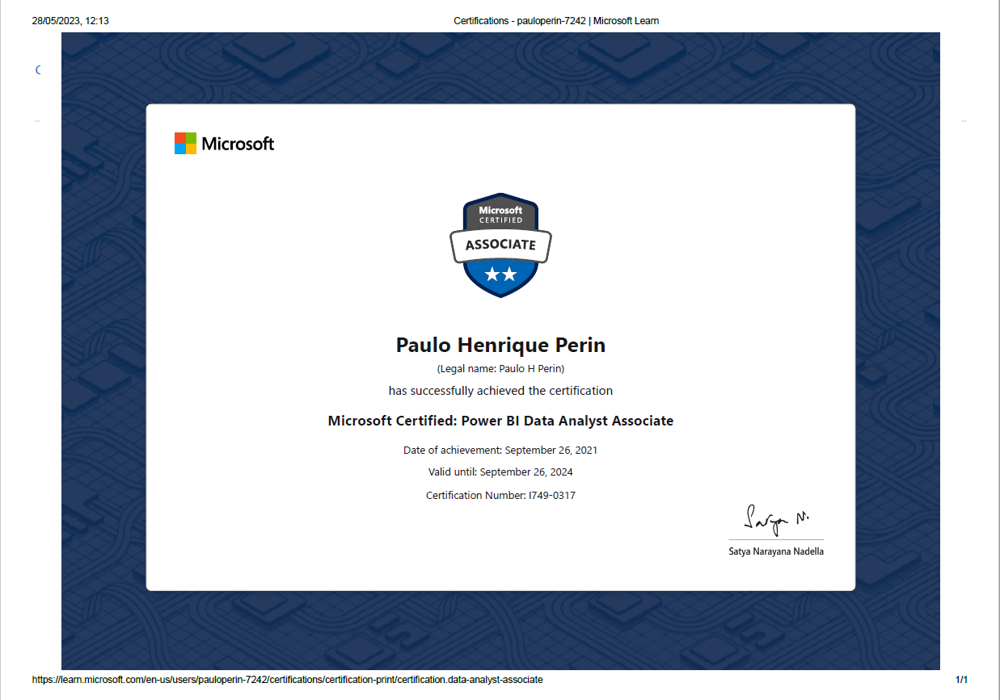
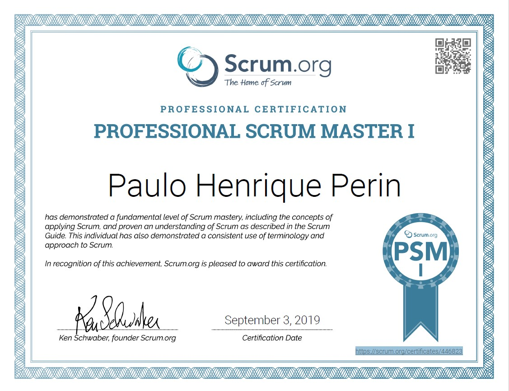
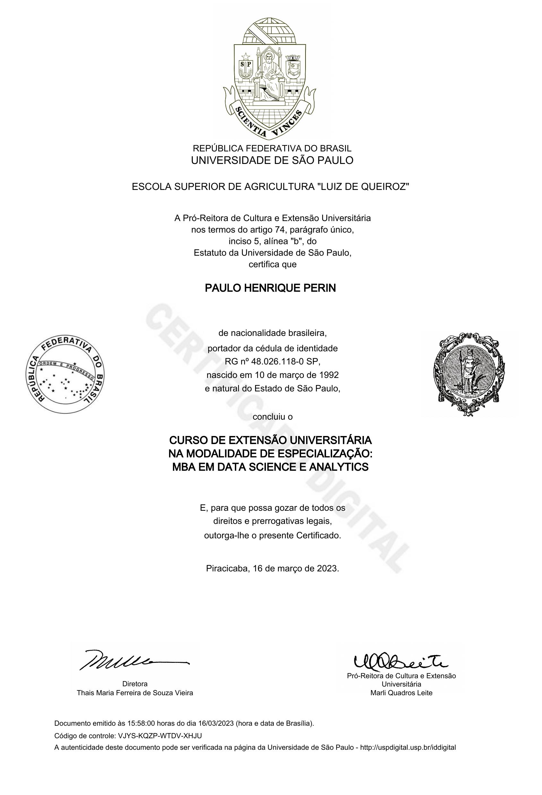
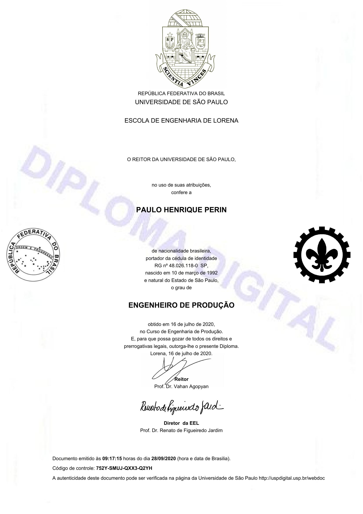

I have earned the Databricks Data Engineer certification in 2025. This achievement highlights my expertise in data engineering and my commitment to leveraging Databricks for advanced data solutions.

In 2021 Microsoft provided me a certification of previously called just Microsoft Data analyst. In order to get this title I had an exam, it was the chance to test my knowledge in data analysis and learn more about Power BI. Since 2021 I've been updating my skills and renewing the certification yearly.

In 2019 I was fascinated by Scrum - The Art of Doing Twice the Work in Half the Time. Back that time I was working with Scrum, so I decided to take this exame to test myself. The exam provided me a solid comprehesion of scrum, this changed my mindset to a data-driven

The global covid pandemic was one of the scariest moments in our generation. During that hard time, I decided to redirect my career to the Data world. During my bachelor I was in touch with data, I started to learn python, java and sql. The internships validated that I wanted data as my career, so I enrolled in the MBA of Data Science and Analytics. I could learn more about data analytics and machine learning techniques on a deeper level, which contributed to my data career.

In 2012, I made one of the most important decisions of my life, I chose Production Engineering as my bachelor's. To get into the 1st University of Brazil I had to prepare mentally and physically for the application and I got that done. The duration of the course is 6 years but I made 2 choices that expand to 8 years. They were my two internships in Bosch the first in Campinas/Brazil and after in Reutlingen/Germany, I do not regret that because God allowed me to meet some of the most amazing people in my life.